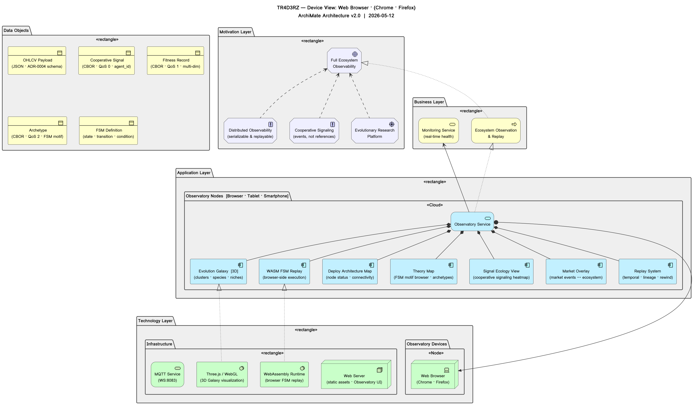

TR4D3RZ — Interactive ArchiMate Device View · Click any element for details
| Active Structure | Behavior | Passive Structure | Motivation | |
|---|---|---|---|---|
| Motivation Layer |
Full Ecosystem
Observability Distributed Observability
(serializable & replayable) Cooperative Signaling
(events, not references) Evolutionary Research
Platform |
|||
| Business Layer |
Ecosystem Observation
& Replay Monitoring Service
(real-time health) |
OHLCV Payload
(JSON · ADR-0004 schema) Cooperative Signal
(CBOR · QoS 0 · agent_id) Fitness Record
(CBOR · QoS 1 · multi-dim) Archetype
(CBOR · QoS 2 · FSM motif) FSM Definition
(state · transition · condition) |
||
| Application Layer |
Deploy Architecture Map
(node status · connectivity) Theory Map
(FSM motif browser · archetypes) Evolution Galaxy [3D]
(clusters · species · niches) Signal Ecology View
(cooperative signaling heatmap) Market Overlay
(market events ↔ ecosystem) Replay System
(temporal · lineage · rewind) WASM FSM Replay
(browser-side execution) |
Observatory Service
|
||
| Technology Layer |
Web Browser
(Chrome · Firefox) Web Server
(static assets · Observatory UI) WebAssembly Runtime
(browser FSM replay) Three.js / WebGL
(3D Galaxy visualization) |
MQTT Service
(WS:8083) |
